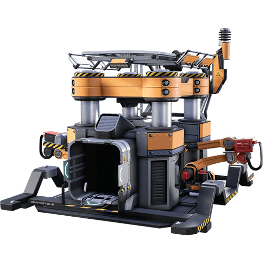
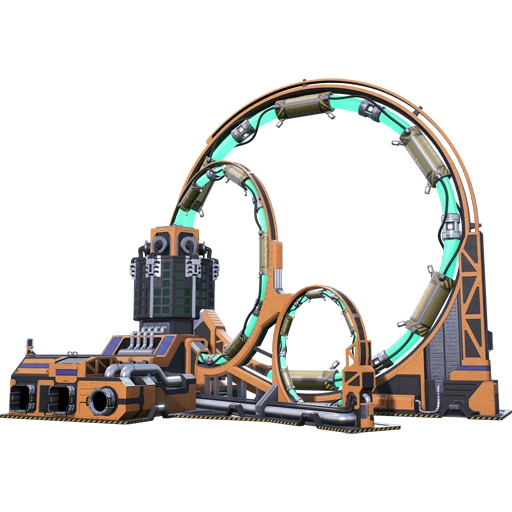
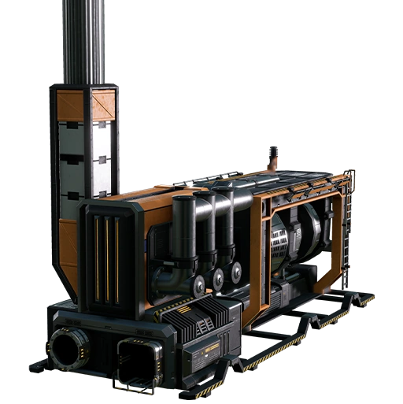
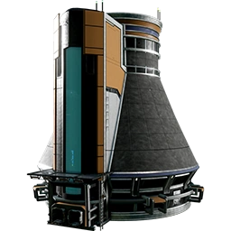
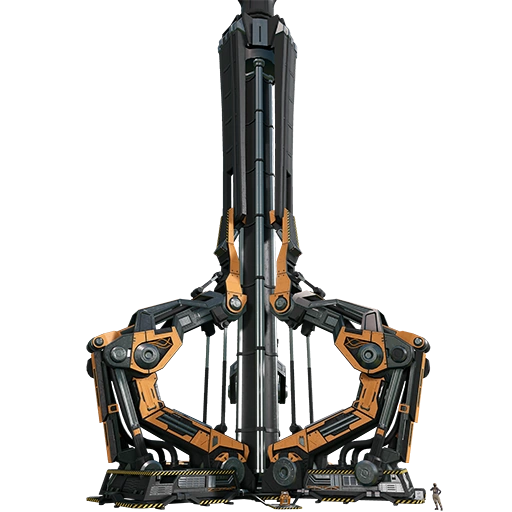

La Machinerie !
Et oui usine dis machines, il existe 3 types de machines :
- les Mineurs
- les Fonderies
- les Constructeurs
 Chaque machine à son importance et elles sont toutes utilise a tous moment
Les Generateurs !
Bien sur pour alimenter vos usines il vous faudra de quoi alimenter tous ca !
Pour ca le jeu est genereux, en effet vous commencer par des bruleurs de biomasse, puis vous enchaine sur des generateurs a charbon. Vous decouvrez le petrol ainsi que le gaz et pour finir la source d'energie Ultime, j'ai nomme le Reacteur Nucleaires
Et les batiments Speciaux !
Pour envoyer vos ressources a votre colonnie vous devez construire un ascenseur orbitale, c'est le plus gros et grand batiments que vous aurez à creer
Mais la colonnie et genereuse avec vous et vous a disposition des broyeurs qui vous donnerons des tickets pour acheter certaines ressources.
